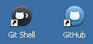

|
|
GitHub Client 感覺有點像是 GitHub 網頁的桌面版，可以做 clone、switch branch 等，但對其他 git 日常的操作則完全不提供，所以它並不能取代 Git Client。 |
GitHub for Windows
從這裡下載 installer (GitHubSetup.exe，大小約 700K)，過程中會下載安裝 .NET Framework 4，然後才是 GitHub for Windows 自己。

可以執行在 Windows XP、Vista、7 跟 8；介面完全是 Windows 8 的風格。
參考資料
其他文件
-
Introducing GitHub For Windows (2012-05-21)